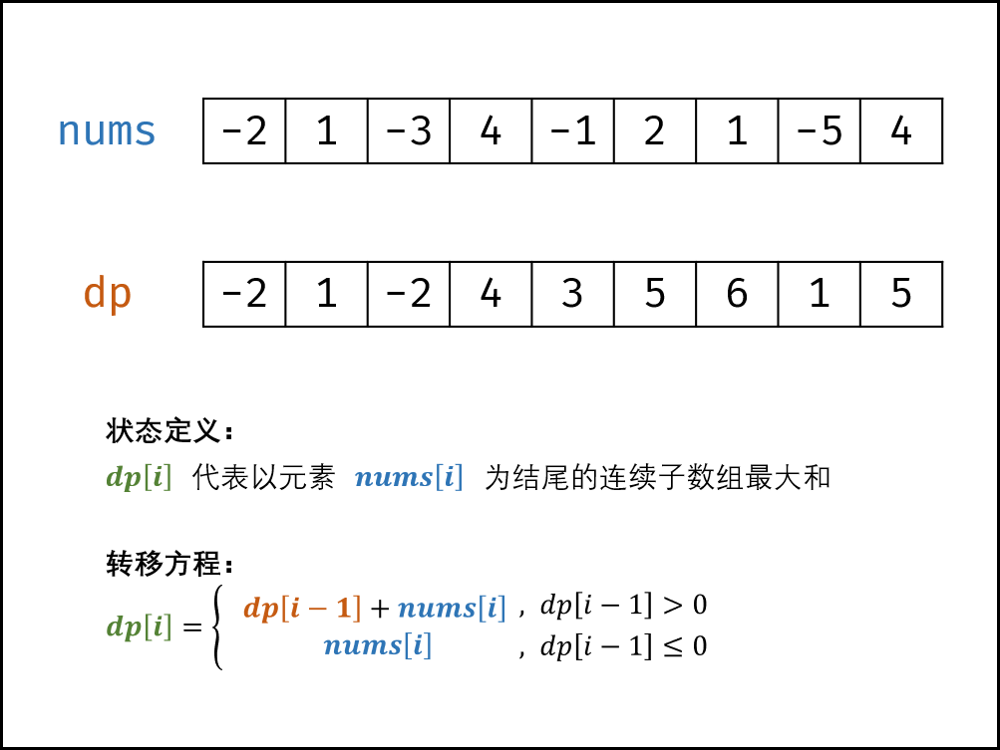

5、剑指 Offer 42. 连续子数组的最大和
目录
一、题目
输入一个整型数组，数组中的一个或连续多个整数组成一个子数组。求所有子数组的和的最大值。
要求时间复杂度为O(n)。
示例1:
输入: nums = [-2,1,-3,4,-1,2,1,-5,4]
输出: 6
解释: 连续子数组 [4,-1,2,1] 的和最大，为 6。
提示：
1 <= arr.length <= 10^5-100 <= arr[i] <= 100
注意：本题与主站 53 题相同：https://leetcode-cn.com/problems/maximum-subarray/
二、解法
2.1、动态规划
核心思路
状态定义：设动态规划列表 dp ，dp[i] 代表以元素 nums[i] 为结尾的连续子数组最大和。
- 为何定义最大和 dp[i] 中必须包含元素 nums[i] ：保证 dp[i] 递推到 dp[i+1] 的正确性；如果不包含 nums[i] ，递推时则不满足题目的 连续子数组 要求。
转移方程： 若 dp[i−1]≤0 ，说明 dp[i - 1] 对 dp[i] 产生负贡献，即 dp[i-1] + nums[i] 还不如 nums[i] 本身大。
- 当 dp[i - 1] > 0 时：执行 dp[i] = dp[i-1] + nums[i] ；
- 当 dp[i - 1]≤0 时：执行 dp[i] = nums[i] ；
初始状态： dp[0] = nums[0]，即以 nums[0] 结尾的连续子数组最大和为 nums[0] 。
返回值： 返回 dp 列表中的最大值，代表全局最大值。
{kind=link}
复杂度分析
时间复杂度：O(N)，线性遍历数组 nums 即可获得结果，使用 O(N) 时间。
空间复杂度：O(1)，使用常数大小的额外空间。
Code
class Solution {
public int maxSubArray(int[] nums) {
// 将 nums 的首个元素作为初始最大值
int max = nums[0];
// 记录 dp[i-1] 的值，对于dp[0]而言，其前面的dp[-1]=0
int former = 0;
// 记录 dp[i] 的值
int cur = nums[0];
for (int num : nums) {
cur = num;
if (former > 0) cur += former;
if (cur > max) max = cur;
former = cur;
}
return max;
}
}